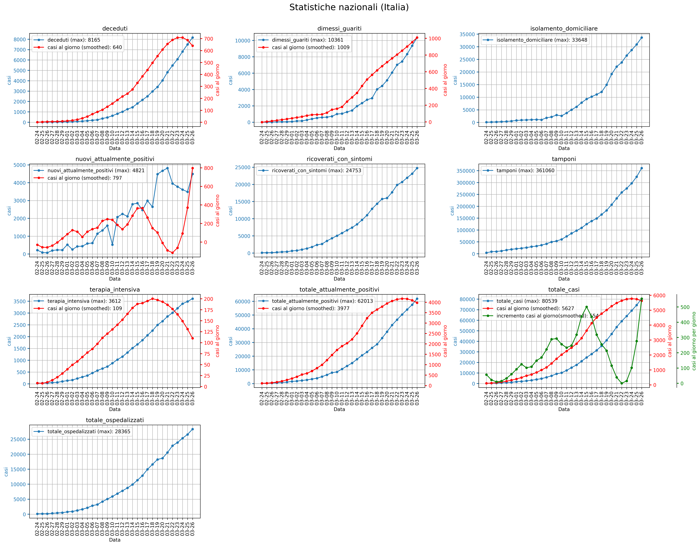

Worldwide and italian diagrams are generated respectively by using the Protezione Civile dataset and data taken from 2019 Novel Coronavirus COVID-19 (2019-nCoV) Data Repository by Johns Hopkins CSSE
Here a preview of statistics computed by using the code in this repository:
Italian Statistics:
